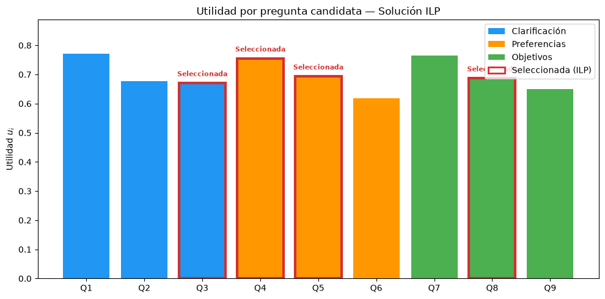

Modelo de Programación Lineal para Selección de Preguntas
Parte I
Notebook
LP
ILP
Python
Notebook con implementación en scipy y PuLP del modelo LP/ILP, visualizaciones y análisis de sensibilidad.
—title: “Implementación — Parte I”subtitle: “Modelo de Programación Lineal para Selección de Preguntas”description: “Notebook con implementación en scipy y PuLP del modelo LP/ILP, visualizaciones y análisis de sensibilidad.”categories: [Parte I, Notebook, LP, ILP, Python]image: images/parte1_thumb.svgformat: html: code-fold: false code-tools: true—
Implementación en Python con visualización de resultados
Este notebook presenta la implementación computacional del modelo de programación lineal (LP) y su extensión binaria (ILP) para la selección óptima de preguntas en un chatbot conversacional, tal como se formula en la Parte I del informe.
1. Datos del problema
Definimos los parámetros de las 9 preguntas candidatas y las restricciones del sistema.
import numpy as npimport matplotlib.pyplot as pltfrom scipy.optimize import linprog# --- Parámetros de las preguntas candidatas ---preguntas = ['Q1', 'Q2', 'Q3', 'Q4', 'Q5', 'Q6', 'Q7', 'Q8', 'Q9']categorias = ['Clarificación', 'Clarificación', 'Clarificación','Preferencias', 'Preferencias', 'Preferencias','Objetivos', 'Objetivos', 'Objetivos']r = np.array([0.90, 0.80, 0.72, 0.89, 0.80, 0.70, 0.92, 0.77, 0.75]) # relevanciag = np.array([0.90, 0.72, 0.78, 0.84, 0.76, 0.67, 0.88, 0.80, 0.68]) # ganancia de informacióna = np.array([1.60, 1.10, 0.95, 1.40, 1.10, 0.85, 1.70, 1.20, 0.85]) # carga cognitival = np.array([0.75, 0.55, 0.70, 0.80, 0.45, 0.40, 1.00, 0.65, 0.50]) # latencia# Utilidad de cada pregunta: u_i = 0.55*r_i + 0.45*g_i - 0.08*a_iu =0.55* r +0.45* g -0.08* a# Restricciones del sistemaM =4# máximo de preguntasB =4.70# presupuesto de carga cognitivaL =2.80# presupuesto de latenciam_k =0.70# cobertura mínima por categoríaprint('Utilidades calculadas:')for i inrange(9):print(f' {preguntas[i]} ({categorias[i]:15s}): u = {u[i]:.4f}')
Utilidades calculadas:
Q1 (Clarificación ): u = 0.7720
Q2 (Clarificación ): u = 0.6760
Q3 (Clarificación ): u = 0.6710
Q4 (Preferencias ): u = 0.7555
Q5 (Preferencias ): u = 0.6940
Q6 (Preferencias ): u = 0.6185
Q7 (Objetivos ): u = 0.7660
Q8 (Objetivos ): u = 0.6875
Q9 (Objetivos ): u = 0.6505
2. Modelo continuo (LP) con scipy.optimize.linprog
Resolvemos el programa lineal relajado donde x_i \in [0, 1].
n =9# linprog minimiza, así que negamos la utilidad para maximizarc_obj =-u# --- Restricciones de desigualdad (A_ub @ x <= b_ub) ---A_ub = [ np.ones(n), # sum(x_i) <= M a, # sum(a_i * x_i) <= B l, # sum(l_i * x_i) <= L# Cobertura mínima: sum(x_i en I_k) >= m_k --> -sum(x_i en I_k) <= -m_k np.array([-1,-1,-1, 0, 0, 0, 0, 0, 0]), # -Clarificación <= -0.70 np.array([ 0, 0, 0,-1,-1,-1, 0, 0, 0]), # -Preferencias <= -0.70 np.array([ 0, 0, 0, 0, 0, 0,-1,-1,-1]), # -Objetivos <= -0.70]b_ub = [M, B, L, -m_k, -m_k, -m_k]# Cotas: 0 <= x_i <= 1bounds = [(0, 1)] * n# Resolverres_lp = linprog(c_obj, A_ub=A_ub, b_ub=b_ub, bounds=bounds, method='highs')print(f'Estado: {res_lp.message}')print(f'Utilidad óptima LP: Z* = {-res_lp.fun:.4f}\n')print('Asignaciones óptimas (proporción de sesiones):')for i inrange(n):print(f' {preguntas[i]}: x = {res_lp.x[i]:.4f}')
Estado: Optimization terminated successfully. (HiGHS Status 7: Optimal)
Utilidad óptima LP: Z* = 2.8348
Asignaciones óptimas (proporción de sesiones):
Q1: x = 0.6500
Q2: x = 0.0000
Q3: x = 1.0000
Q4: x = 1.0000
Q5: x = 0.6500
Q6: x = 0.0000
Q7: x = 0.0000
Q8: x = 0.0000
Q9: x = 0.7000
3. Modelo binario (ILP) con PuLP
Resolvemos el programa lineal entero binario donde y_i \in \{0, 1\}.
from pulp import LpMaximize, LpProblem, LpVariable, lpSum, value, LpBinaryprob = LpProblem('Seleccion_Preguntas', LpMaximize)# Variables binariasy = [LpVariable(f'y_{i+1}', cat=LpBinary) for i inrange(n)]# Función objetivoprob += lpSum(u[i] * y[i] for i inrange(n)), 'Utilidad_Total'# Restriccionesprob += lpSum(y[i] for i inrange(n)) <= M, 'Max_Preguntas'prob += lpSum(a[i] * y[i] for i inrange(n)) <= B, 'Carga_Cognitiva'prob += lpSum(l[i] * y[i] for i inrange(n)) <= L, 'Latencia'prob += lpSum(y[i] for i inrange(3)) >= m_k, 'Cobertura_Clarificacion'# Q1-Q3prob += lpSum(y[i] for i inrange(3, 6)) >= m_k, 'Cobertura_Preferencias'# Q4-Q6prob += lpSum(y[i] for i inrange(6, 9)) >= m_k, 'Cobertura_Objetivos'# Q7-Q9prob.solve()print(f'Estado: {prob.status} ({"Óptimo"if prob.status ==1else"No óptimo"})')print(f'Utilidad óptima ILP: Z* = {value(prob.objective):.4f}\n')seleccionadas = []print('Decisiones:')for i inrange(n): sel =int(value(y[i])) marca ='✓ Seleccionada'if sel ==1else' No seleccionada'print(f' {preguntas[i]} (u={u[i]:.4f}): {marca}')if sel ==1: seleccionadas.append(i)carga_usada =sum(a[i] for i in seleccionadas)latencia_usada =sum(l[i] for i in seleccionadas)print(f'\nRecursos utilizados:')print(f' Carga cognitiva: {carga_usada:.2f} / {B:.2f} (holgura: {B - carga_usada:.2f})')print(f' Latencia: {latencia_usada:.2f} / {L:.2f} (holgura: {L - latencia_usada:.2f})')
fig, ax = plt.subplots(figsize=(10, 5))colores_cat = {'Clarificación': '#2196F3', 'Preferencias': '#FF9800', 'Objetivos': '#4CAF50'}colores = [colores_cat[c] for c in categorias]bordes = ['#D32F2F'if i in seleccionadas else'none'for i inrange(n)]anchos = [3if i in seleccionadas else0for i inrange(n)]bars = ax.bar(preguntas, u, color=colores, edgecolor=bordes, linewidth=anchos)for i in seleccionadas: ax.annotate('Seleccionada', (i, u[i]), textcoords='offset points', xytext=(0, 8), ha='center', fontsize=8, fontweight='bold', color='#D32F2F')from matplotlib.patches import Patchlegend_elements = [Patch(facecolor=c, label=k) for k, c in colores_cat.items()]legend_elements.append(Patch(facecolor='white', edgecolor='#D32F2F', linewidth=2, label='Seleccionada (ILP)'))ax.legend(handles=legend_elements, loc='upper right')ax.set_ylabel('Utilidad $u_i$')ax.set_title('Utilidad por pregunta candidata — Solución ILP')ax.set_ylim(0, max(u) *1.15)plt.tight_layout()plt.show()

4.2 Comparación LP vs ILP
fig, axes = plt.subplots(1, 2, figsize=(12, 5))# Gráfico LP (continuo)axes[0].bar(preguntas, res_lp.x, color=colores, alpha=0.8)axes[0].set_ylabel('$x_i$ (proporción)')axes[0].set_title(f'Modelo Continuo (LP)\nZ* = {-res_lp.fun:.4f}')axes[0].set_ylim(0, 1.15)axes[0].axhline(y=1, color='gray', linestyle='--', alpha=0.3)# Gráfico ILP (binario)y_vals = [int(value(y[i])) for i inrange(n)]axes[1].bar(preguntas, y_vals, color=colores, alpha=0.8)axes[1].set_ylabel('$y_i$ (0 o 1)')axes[1].set_title(f'Modelo Binario (ILP)\nZ* = {value(prob.objective):.4f}')axes[1].set_ylim(0, 1.15)for ax in axes: ax.legend(handles=[Patch(facecolor=c, label=k) for k, c in colores_cat.items()], loc='upper right', fontsize=8)fig.suptitle(f'Brecha de integralidad: {-res_lp.fun - value(prob.objective):.4f}', fontsize=11, y=0.02)plt.tight_layout()plt.show()
from pulp import PULP_CBC_CMDdef resolver_ilp_sens(M_val, B_val, L_val): p = LpProblem('Sens', LpMaximize) yv = [LpVariable(f'ys_{i}', cat=LpBinary) for i inrange(n)] p += lpSum(u[i] * yv[i] for i inrange(n)) p += lpSum(yv[i] for i inrange(n)) <= M_val p += lpSum(a[i] * yv[i] for i inrange(n)) <= B_val p += lpSum(l[i] * yv[i] for i inrange(n)) <= L_val p += lpSum(yv[i] for i inrange(3)) >= m_k p += lpSum(yv[i] for i inrange(3, 6)) >= m_k p += lpSum(yv[i] for i inrange(6, 9)) >= m_k p.solve(PULP_CBC_CMD(msg=0)) obj = value(p.objective) returnfloat(obj) if obj isnotNoneelse0.0B_sens= [round(3.5+ i*0.1, 1) for i inrange(27)]Z_B = [resolver_ilp_sens(M, bv, L) for bv in B_sens]L_sens = [round(1.5+ i*0.1, 1) for i inrange(27)]Z_L = [resolver_ilp_sens(M, B, lv) for lv in L_sens]M_sens = [3, 4, 5, 6, 7]Z_M = [resolver_ilp_sens(mv, B, L) for mv in M_sens]# Filtrar infactiblesbx = [b for b, z in zip(B_sens, Z_B) if z > 0]by = [z for z in Z_B if z > 0]lx = [lv for lv, z in zip(L_sens, Z_L) if z > 0]ly = [z for z in Z_L if z > 0]fig, axes = plt.subplots(1, 3, figsize=(15, 4.5))axes[0].plot(bx, by, 'o-', color='#D32F2F', markersize=4)axes[0].axvline(x=B, color='gray', linestyle='--', alpha=0.5, label=f'B={B}')axes[0].set_xlabel('Presupuesto de carga cognitiva (B)')axes[0].set_ylabel('Utilidad óptima Z*')axes[0].set_title('Sensibilidad a carga cognitiva')axes[0].legend()axes[1].plot(lx, ly, 's-', color='#1976D2', markersize=4)axes[1].axvline(x=L, color='gray', linestyle='--', alpha=0.5, label=f'L={L}')axes[1].set_xlabel('Presupuesto de latencia (L)')axes[1].set_ylabel('Utilidad óptima Z*')axes[1].set_title('Sensibilidad a latencia')axes[1].legend()axes[2].bar([str(m) for m in M_sens], Z_M, color='#4CAF50', alpha=0.8)axes[2].set_xlabel('Máximo de preguntas (M)')axes[2].set_ylabel('Utilidad óptima Z*')axes[2].set_title('Sensibilidad a número de preguntas')plt.suptitle('Análisis de sensibilidad', fontsize=13, fontweight='bold')plt.tight_layout()plt.show()
5. Resumen de resultados
Modelo
Utilidad óptima
Preguntas seleccionadas
Herramienta
Continuo (LP)
Z* ≈ 2.8348
Asignaciones fraccionarias
scipy.optimize.linprog
Binario (ILP)
Z* = 2.8080
Q3, Q4, Q5, Q8
PuLP
La brecha de integralidad es de apenas 0.0268, confirmando que la relajación LP es una excelente aproximación al problema binario. Las restricciones más activas son la de carga cognitiva (holgura de 0.05) y la de máximo de preguntas (ajustada exactamente a 4).